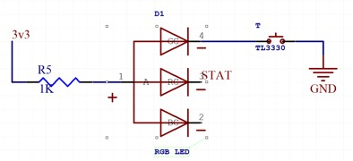

Outpatient Medical Wearable Motherboard
Altium Designer | Fabricated by Advanced Circuits
Project for ES96 at Harvard, Fall 2017
For my junior design project at Harvard, I had a chance to work in a consulting role to the Dana Farber Cancer Institute and Global Health Initiative based in Boston in order to develop the electronics for a medical device to help pediatric cancer patients. This "outpatient wearable" is a small wristwatch-like device that has an integrated temperature sensor that monitors a patient's temperature. An elevated temperature in a child's body after they have been diagnosed with some form of cancer can often mean they are highly at risk. This temperature monitor is worn by the child at all times to mitigate the risk of an elevated temperature going unnoticed by a parent or guardian.
I designed the board in Altium Designer and selected the components. There was a mechanical component to the medical device that was completed by a separate team - only the electrical part is documented here.
Overview
Fundamentally, the electronics for this device include microcontroller, temperature sensor, and LEDs to indicate when the temperature sensor detects a reading that is too high. Beyond that, there is some battery management circuitry. I will break down each component of the overall schematic separately.
Schematic Capture
Selecting components was the first step toward getting the motherboard to the point where it could be fabricated. The components selected had to have form factors selected for which footprints could be found for producing the board in Altium Designer.
Standard libraries don’t exist for most components used on the board, but a free library at snapeda.com has a large enough sample library of parts from Digikey that it wasn’t too hard to find all of the parts on there. A few components had to be switched out for other components because finding the footprint or a mechanical diagram for them was impossible. Most notably was the waterproof micro-USB port which switched from a JAE electronics part to a MOLEX part, and the audio transducer which was chosen because it was the only part in that family of parts for which a footprint could be found.
Microcontroller: ATtiny44
The ATTiny44 is at the center of the whole motherboard and with good reason - it takes in the input from the temperature sensor, calculates the temperature reading, and then outputs to the LEDs and audio transducer if needed. The ATtiny44-20SSU comes in the 14-SOIC package with two lines of 7 pins on either side of the IC. This form factor was chosen for two reasons: (1) it is a relatively compact form factor compared to something like a DIP package and (2) it is solderable by hand because there is approximately a 15 mil spacing between the pads which is plenty.
Even more notable here is that every single GPIO pin on the ATtiny is used: out of the 12 GPIO pins, 3 are used for LEDs, 2 for the temperature sensor, 1 for the speaker, 3 for programming, 2 for FTDI debugging, and 1 as a hardware reset. This processor is optimized perfectly for the number of inputs and outputs our device had. And with a dedicated hardware PWM for the speaker, the processor saved us the need to include a transducer driver chip.
Audio Transducer Circuit
The audio transducer is a simple MOSFET driver for an inductive load using a Schottky diode for protection on the speaker. The 220 ohm resistor at the gate of the MOSFET is for frequency compensation but could potentially be left out since the highest frequency we reach for this driver is only around 4kHz. The transducer comes in a 3 pin package in which only 2 of the pins are used which makes for very simple wiring.
The Schottky diode came in the miniscule SOD-323 package which is only 1.7mm by 1.25mm package and tiny 0.8 square mm pads. This component was the second-most-difficult to solder behind the micro-USB (7 mil traces with 7 mil spacing). What made the SOD-323 so difficult was the fact that the soldering iron tip was significantly bigger than the pad, so a kludgy rework system was the only way to ensure a good solder joint.
Temperature Sensor
From a motherboard perspective, the temperature sensor was the easiest component to account for. The temperature sensor we were using came on a separate PCB and connected to the motherboard using three 30-gauge wires that carried the ENABLE, DATA_OUT, and GND signals to the other board. The VCC and ENABLE lines were tied together on that board meaning the temperature sensor was always on.
To accommodate these on the motherboard, three through-hole solder points would be needed to connect the 30-gauge wire from the temperature sensor. These through-hole points would then route to the microcontroller which would be able to read in the values. The temperature sensor communicated an analog voltage back to the microcontroller so the DATA_OUT signal is routed to PA7 (pin 6 on the microcontroller) which has a built in ADC for reading in that value.
Battery Charge Circuit
A key aspect of allowing the outpatient wearable to be usable in low-middle income settings was allowing users to charge it using a cable or system they are familiar with. The micro-USB receptacle here serves the sole purpose of allowing the user to charge via a standard micro-USB cable such as the kind that ships with most Android phones.
Only the +5V bus and GND lines of the micro-USB are used - the other two lines are left disconnected because instead of allowing in-system programming on the ATtiny44 using an FTDI RS-232 chip, all of our systems are one-time flash with no option to reprogram once they are completed and sealed away.
The chip that handles the battery charging is the MCP73831T which ships on standard Adafruit chargers such as the one that comes with our 150mAH battery. This is a fully integrated charge controller that can determine when a battery is full and when it is time to stop charging. The 10K resistor sets the charge rate at 100mA which is a safe value for the 150mAH battery. This means our charge time is approximately 90 minutes from empty for our battery.
The capacitor on the left side of the circuit is for noise filtering and charge stabilization. The 5V supply line is not used anywhere except as input to the battery charge circuitry.
Battery Check Circuit
In order to let the user know when the battery on the device had run out of power, we installed a very basic LED connected across the leads of the battery with a small push-button. Press the button and, as long as the button is pressed, the RGB LED on the board should light up green.
An RGB LED was chosen here because it serves double purpose by also letting the user know when the device is plugged in and successfully charging. This LED will turn red because it is connected to a “status” output on the charge controller that lets the user know when the device is plugged into a micro-USB and successfully charging.
Information Read-Out LEDs
These are the most important LEDs as they are the ones that allow the user to know when their health is potentially compromised from a higher than usual body temperature. They are of the 1206 SMT value which was large enough to be visible from a healthy distance while still fitting in between the programming headers that would also have to be included on the board.
Each LED is complemented with a 1k ohm resistor which limits the current and allows the brightness of the LED to be at an acceptable level.
Programming Headers
In what is perhaps the least aesthetically pleasing design decision on this board, two sets of headers were added to assist in the research and development of this board. These ugly gold pads only show up on prototype boards and would surely be removed if the device ever went to mass production.
The 2x3 rectangular 0.100” header is important for programming the board - it connects to the MISO and MOSI pins of the ATtiny44 to allow it to be programmed by most in-system programmers via something like Atmel Studio or AVRdude from the computer.
The other 1x6 long 0.100” header serves a debugging purpose by allowing an FTDI connection to a computer. There are two massive benefits to having this FTDI header for debugging: (1) it allows us to power up the board to 3.3V without having the battery connected which is an important safety consideration for detecting shorts and other malfunctions within the board.
Another benefit is that (2) the FTDI cable has a built in RS-232 chip that allows the computer to communicate with the board via a Serial terminal or something of that sort in Arduino. “Print” statements from the computer can be printed to the command line and reveal what is going on inside the processor for the purposes of debugging.
Board Layout and Routing
After schematic capture, the natural next step in PCB design is to import all of the schematic footprints and netlist to the board layout environment and figure out the best way to fit all of the components and traces onto the predefined board area. We had a form factor of roughly 1.00” by 0.80” to work with so I had to start with that.
The empty board above has the board cutout defined on the M1 layer which is pretty standard for Altium Designer. The little notch on the corner creeps up 0.15” on each side and is cut at a 45 degree angle. This notch was added at the request of the mechanical team to help with orienting the board and to give it a little character. It also served a crucial purpose later on in determining the orientation of the RGB LED when soldering.
Board Stackup
Before diving into the nitty-gritty of board trace routing, it became important to chose how many signal layers the board would have. We were heavily constrained on Z height so instead of the standard 0.063” thick FR-4 PCB, we decided to go with the thinner 0.031” thick FR-4 boards instead. The fabrication cost was marginally more but the difference in 0.03” for a device with a total thickness of around 0.25” made a pretty big difference to us.
The original design called for a 4-layer board which is pretty typical - we could use the inner layers as ground and power planes, or use them for signal routing if absolutely necessary. The FR-4 core is pretty standard and the 1080 prepreg was recommended on the website for Advanced Circuits which was our boardhouse. Ultimately, we chose green soldermask for the board because it was the cheapest of the options available.
Board Layout: Top Layer

The top layer of the board has fewer components - this is because it is flush with the surface of the case and primarily needs to show the user the 3 LEDs determining the temperature status. Since there is so much extra space not taken up by components, this was a perfect place to include the programming and FTDI headers. The programming header is in the Southeast corner next to the RGB LED for checking battery life, and the FTDI header is on the North side of the LEDs.
Silkscreen was printed with a line near the pads of the LEDs to guide assembly - the green line on the actual LED could be matched up to the silkscreen line near the pads to ensure the LED was oriented correctly. The RGB LED had an even easier guide for ensuring its orientation was correct - the notch at the lower right corner of the RGB LED perfectly aligned to the actual form factor of the board itself. They both had a notch cut out of the same corner making alignment simple.
There are many many vias on this board - the reason for that is about halfway through the routing process, it became clear that everything could fit onto a 2-layer board instead of the aforementioned 4-layer board. The requirement to make it all fit on 2 layers is that the board would required 10 mil vias which was right at the lower limit of what Advanced Circuits was capable of.
Note, finally, the presence of the two large plated holes on the left side of the board for directly soldering wires from the battery onto the motherboard. The battery has 22 AWG wires so the holes for mounting the battery are significantly bigger than the holes for the 30 AWG wires of the temperature sensor.
Board Layout: Bottom Layer
The bottom layer is where many of the components that make the board work are actually hidden. The center of everything is the ATtiny44, placed centrally because it has traces that run to nearly every other component. The micro-USB is also placed on the bottom layer and is notable because it has 7 mil traces which pushes the limits of most manufacturing houses.
The battery management circuitry is on the north side of the board because it provides a clean path from the battery mount point to the processor to the micro-USB header. The south side of the board is reserved for signal traces like those for the LEDs and the data from the temperature sensor. The pushbutton is nested in the southwest corner of the board where it is close to the battery connection points.
The completed board with all electrical layers is shown below in red (top) and blue (bottom):
Mechanical layers define the boundaries of the parts and how they may protrude into other parts or off of the board. The mechanical layers are included in the image below:
One final rendering of the board with all layers, both electrical and mechanical as well as the keep-out layer and silkscreen is shown below:
Altium Designer provides one last feature which is a 3D view of the board. Renderings of the top and bottom of the board with most components included are shown below:
And the bottom layer, with processor and other components included in 3D detail.
DFM, Fabrication, and Soldering
Once the board was designed, there were only a few minor Design for Manufacturing (DFM) issues that needed to be resolved before fabrication. The first one related to the proximity of vias to pads in a couple locations, one of which is highlighted below in the white circle:
This type of conflict is only an issue when a through-hole component is being soldered to the hole that ends up in another pad. In this case, the hole was simply a via meant to route the signal that the pad was on anyways. Normally there would be a space left for aesthetics, but the tightness of everything on this board required us to overlook that common design practice to fit everything.
The only other DFM issue was related to the proximity of silkscreen to copper pads. In the library component for the 0603 resistors used in this device, a silkscreen that is right next to the copper pads is defined as shown in the white circle below:

The bottom silkscreen is too close to the copper pads which could cause a printing error. These lines on the bottom silkscreen are sort of pointless though - we don’t really care if they’re there or not. To allow the device to pass DFM, we simply asked the program to ignore these silkscreen lines as they served no important purpose.
In our first prototype phase, approximately 50 of these boards were ordered from Advanced Circuits and soldered by hand to test. This process was extremely straightforward as all of the components were carefully chosen to allow for surface-mount soldering using standard techniques. While we had a Zephyrtronics rework station available for use, none of the components were BGA components that required more advanced soldering techniques.